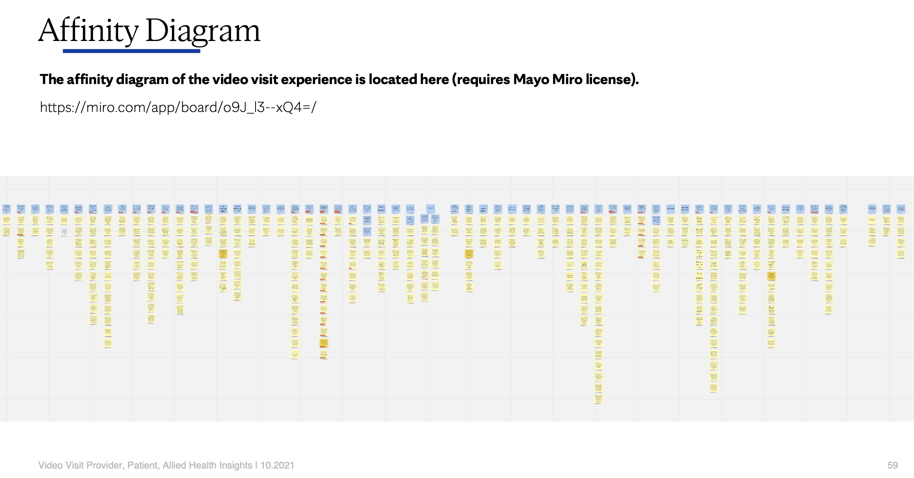
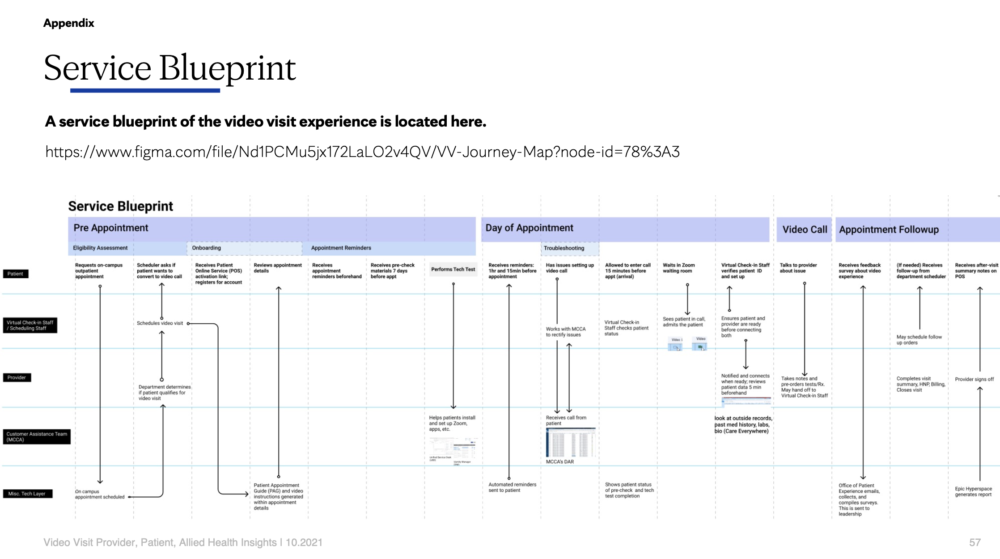
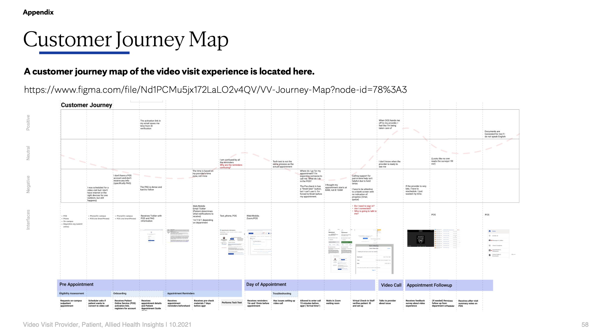
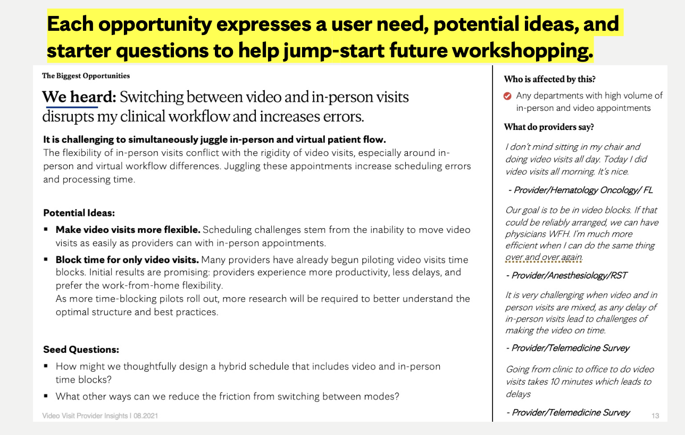

Transforming a pandemic response into a sustainable care platform
Fixing the hidden friction behind rapidly scaled telehealth.
Duration
6 months research 2 years implementation
Role
UX Researcher + Product Manager
Organization
Center for Digital Health
Team
Video Visits Team, across 11 medical departments
01
01Problem context
Scaling telehealth exposed hidden operational and experience debt.
Mayo Clinic rapidly expanded video visits during COVID to maintain access to care. While the clinical interaction itself performed well, the supporting systems — scheduling, pre-check-in, portal access, and staff coordination — were not designed for sustained, high-volume virtual care.
As a Senior Product Designer within the Center for Digital Health, I was asked to evaluate the end-to-end Video Visit experience to identify systemic breakdowns affecting patients, providers, and operational teams.
02
02The question
How might we evolve video visits from a “functional” solution into a scalable, low-friction care platform?
Despite strong patient satisfaction scores, Mayo saw rising support costs, provider frustration, and patient abandonment in pre-appointment workflows. The core challenge was not improving the video call itself, but redesigning the product and service layers that enable virtual care at scale.
03
03Our approach
Service-level research across the full virtual care ecosystem.
I led a multi-stakeholder research initiative spanning physicians, patients, and operational staff (DOS, PASS, allied health). Through interviews, journey mapping, service blueprints, and affinity synthesis, I translated over 500 qualitative insights into a small set of prioritized opportunity areas.
The work aligned clinical leadership, operations, and IT around shared root causes and informed a phased roadmap balancing immediate workflow improvements with longer-term platform investments.
Affinity diagramming to synthesize 500+ statements into thematic clusters
Service blueprinting to map front-stage and back-stage operational handoffs
Journey mapping to identify pain points across the pre-visit, visit, and post-visit continuum
Research deliverables

Affinity diagram — 500+ statements synthesized into thematic clusters

Service blueprint — front-stage and back-stage handoffs

Journey map — pain points across pre-visit, visit, and post-visit
06
06Key insights
Four systemic breakdowns — and the design responses to each.
Questionnaire overload was the #1 barrier to pre-visit completion.
Patients were abandoning pre-check-in workflows at alarming rates. Allied health staff identified redundant questionnaires as the single biggest complaint. Patients reported filling out identical forms multiple times — for rescheduled appointments, same-day visits, or across different modalities (phone vs. video).
Design response: a two-pronged approach — (1) ruthlessly audit questionnaires to retain only provider-essential items, and (2) implement smart form logic to recognize context (same-day appointments, reschedules, modality switches). This became a high-priority engineering initiative that ultimately reduced questionnaires by 40%.
Providers couldn’t see or communicate with virtual patients the way they could in person.
In physical clinics, providers could peek into exam rooms, walk to the front desk, or visually assess patient flow. In video visits, they lost all spatial awareness. When running late, they had no way to reassure patients. When patients were late, they had no way to know.
Design response: persistent visual representations of patient/provider status (inspired by “traffic light” systems) and a dedicated virtual staff hotline for providers — plus simple pre-call messages to patients (“I’ll be right with you”), reducing anxiety on both sides.
Mixing in-person and virtual appointments disrupted clinical flow and increased errors.
Providers juggling hybrid schedules experienced constant mode-switching friction. In-person visits are inherently flexible (you can see a patient early, juggle exam rooms, peek in to update wait times). Video visits are rigid — one patient at a time, scheduled to the minute. Switching between these modes created delays, scheduling errors, and cognitive load.
Design response: thoughtfully designed time-blocking as a scheduling principle, enabling providers to cluster video visits and maintain focus. This required operational policy shifts, scheduling tool updates, and change management — but addressed a root cause of provider dissatisfaction.
The “digital front door” wasn’t ready for the volume it needed to handle.
Mayo scheduled video visits without requiring active Patient Portal accounts, assuming patients would complete setup on their own. This created a cascade of issues: missed notifications (sent only to the Portal inbasket), expired activation links (7-day expiration), and massive manual support burden for DOS/PASS teams.
Design response: treat Portal activation as a prerequisite for video scheduling (policy shift), implement context-aware interactive setup guides, and prioritize UX-debt reduction in the web/app experience — with notification redundancy so critical messages reach patients via email/SMS, not just the Portal inbasket.
07
07Recommendations
A phased roadmap balancing quick wins and systemic transformation.
Immediate · 0–3 months
Audit and reduce mandatory questionnaires by 40%
Implement smart form logic to prevent redundant questionnaire loops
Create a dedicated virtual staff hotline for provider-to-staff communication
Pilot video-only time blocks in high-volume departments
Near-term · 3–6 months
Redesign pre-check-in UX with progressive disclosure and auto-fill
Implement persistent visual status indicators for patients and providers
Enable direct provider-to-patient messaging (“I’ll be right with you”)
Require active Portal accounts before scheduling video visits
Long-term · 6–12 months
Build context-aware notification logic across channels (email, SMS, Portal)
Create a telehealth “best practices” handbook for provider onboarding
Redesign the waiting room experience to reduce patient anxiety
Develop scheduling tools that intelligently support hybrid in-person/virtual workflows

Research reports often become “shelf-ware.” To prevent this, I distilled 24 findings into scannable one-pagers that stakeholders could reference in real time during workshops and planning sessions.08
08Outcomes & impact
Transforming insights into measurable operational goals.
Operational efficiency
40% reduction in pre-visit questionnaires, directly addressing the #1 patient complaint
15,000+ monthly appointment capacity increase through streamlined workflows
$1.2M annual cost savings from reduced support burden and automation
Provider experience
Video time-blocking pilots expanded across departments, improving efficiency and work-life balance
Clearer communication channels reduced provider frustration and scheduling errors
Patient experience
Lower pre-check-in abandonment rates
Reduced anxiety through clearer expectations and status visibility
More inclusive care — easier for long-distance caregivers to participate
Strategic value
Research artifact continues to guide product roadmap prioritization
Service blueprints and journey maps adopted as organizational reference tools
Insights directly informed subsequent design system and platform investments
09
09Reflection
What I learned designing for complex healthcare systems.
The hardest problems exist between roles, not within them.
The biggest opportunities weren’t UX issues isolated to a single screen. They were systemic breakdowns in how different teams coordinated. Providers couldn’t reach DOS. DOS couldn’t understand provider schedules. Patients didn’t know PASS had scheduled them. Solving these required service design thinking, not just interface design.
Research artifacts matter as much as research insights.
The service blueprints, journey maps, and affinity diagrams I created became shared references across clinical, operational, and IT teams. They created a common language for talking about problems that had previously felt isolated to individual departments.
Scaling requires rethinking, not just improving.
Mayo’s instinct was to “fix” the video visit experience incrementally. What the research revealed was that the underlying service model — designed for emergency pandemic response — needed fundamental restructuring to support sustained, high-volume care. Sometimes the right design move is advocating for operational and policy change, not just interface improvements.
Telehealth isn’t just “video calls” — it’s an entire ecosystem.
The success of a 30-minute clinical conversation depends on dozens of invisible workflows: scheduling, portal access, pre-check-in, notifications, staff coordination, post-visit documentation. Designing for telehealth means designing the entire service layer, not just the moment of care.
*Certain details have been omitted due to disclosure policies. This case study is a condensed view of a complex, multi-year initiative — there’s significantly more depth to share around research methodology, detailed findings, stakeholder alignment strategies, and implementation nuances. I’m happy to discuss the full scope in conversation and can provide the complete 61-page research report upon request.